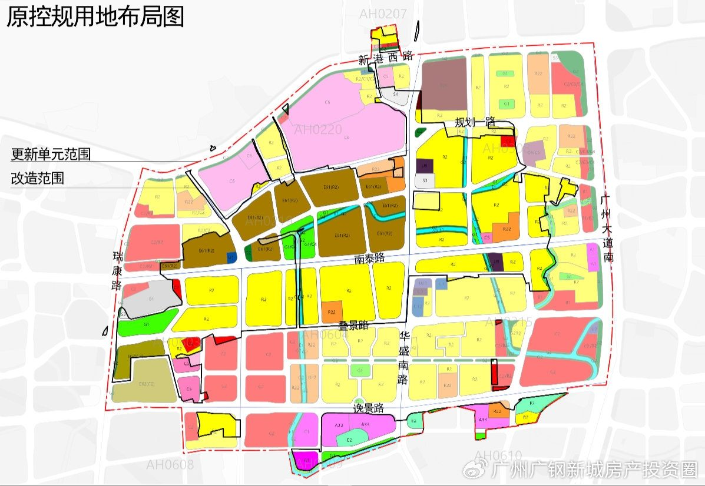
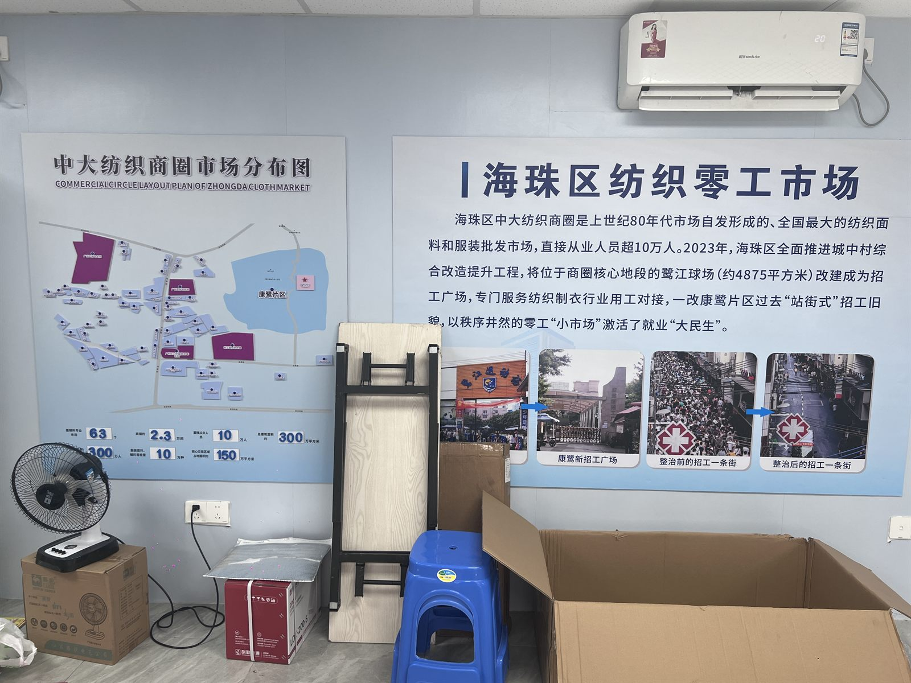
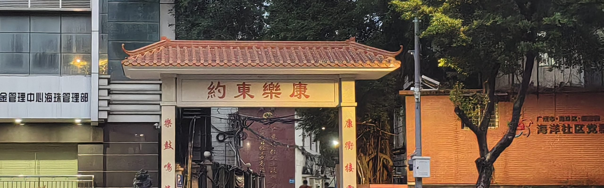

Plan Reference
规划图对照
上面的意象图是课题组绘制的，用来表达空间关系；下面这张是公开的规划图件， 用来核对方位与用地性质。两者并列，是为了让「大致在哪」这件事有据可查。




Relational Map · 5 Layers
片区北至新港西路、东至广州大道南、西至瑞康路、南至逸景路；中大布匹市场就在北侧一路之隔。下面的意象图按这套方位摆放节点，但不按比例。
Plan Reference
上面的意象图是课题组绘制的，用来表达空间关系；下面这张是公开的规划图件， 用来核对方位与用地性质。两者并列，是为了让「大致在哪」这件事有据可查。


Reading the Space
一栋握手楼里，往往一楼是档口或辅料店，中间楼层是作坊，顶层是加盖的铁皮房—— 也是面积最大、租金最低、最容易被认定为违建的部分。产业在垂直方向上完成了自我堆叠。
从中大布匹市场选料，到村内加工，再到凌晨发往十三行——全部发生在步行十分钟与车程半小时的半径内。 「去哪里都快」是康鹭速度的物理前提。
广清产业园在 80 公里之外。这个距离意味着「当天接单、当天出货」不再成立， 也意味着印花、烫钻、洗水这些「就在楼下」的配套工序需要重新组织。